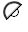

Welcome to Similarity Pattern Matching
Welcome to Similarity Pattern Matching
Similarity estimates the similarities or dissimilarities between things. It compares any group of characters with any other group of characters and estimates the percentage similarity between one or more items.
The application itself is a really a proof of concept exercise where the underlying premise is that no proprietary data ever leaves the confines of the local application. This premise arose from a conversation discussing the complexities inherent in the EU data protection (GDPR 2016/679) requirements surrounding online privacy regulations. In particular it addresses the transfer of personal data outside the EU and EEA areas.
Similarity is largely language independent as it is as comfortable comparing hex, binary, and ascii variations as it is comparing DNA strings, or indeed address verification.
Data Repositories
We’ve crafted extensive data repositories including common abbreviations, acronyms, business language and even jargon, that reside in the cloud. These libraries can be enhanced, either on a user, client or global basis to target specific types of data and can be used to facilitate accurate blending of otherwise disparate data sets. Your original data content is always preserved.
Creating Matching Patterns
You can select and save from multiple preference types when defining search patterns.
Phonetic matching alleviates sound pronunciation where spelling can be overlooked. Words can be created, removed and normalized automatically, all without altering your original data content. The cutoff point is simply wherever the matching comparisons found are determined to be so numerous as to be of no interest.
 Authors and Contributors
Authors and Contributors
Realistically there are many authors spanning many years of enterprise, from John W. Ratcliff and John A. Obershelp through to the much more recent @jbtule. I have jumped all over many a reference upon whose shoulders I have had the luxury of standing. At some point I will endeavour to more effectively highlight their work in my GitHub pages.
Most definitely though, a shout out goes to Andrew Karno maxime summus magistratus, who would never credit himself, and who not only sewed the seed, but pruned the branches as well.
 Proof of Concept
Proof of Concept
As a proof of concept exercise a principle focus has been utilizing both Amazon Web Services (AWS) as the SQL Server database server repository, and GitHub repositories as the application and client facing place holders.
Additionally, GitHub is also used as the automatic update repository housing each version release. Both industry standard repositories are outstanding, but this is not the forum to sing their virtues, as both already do so perfectly adequately on their own.
Support or Contact
Similarity is free to use and is only a GitHub baby.
As such, online support and documentation are still gestating. Please contact me @ceresbakalite directly at GitHub. Leave a comment, ask a question and I will respond.
On that note. Updates are automatic, but if you do wish to download the product for the first time you can do so, but please get in touch as Similarity is still very much a beta release.